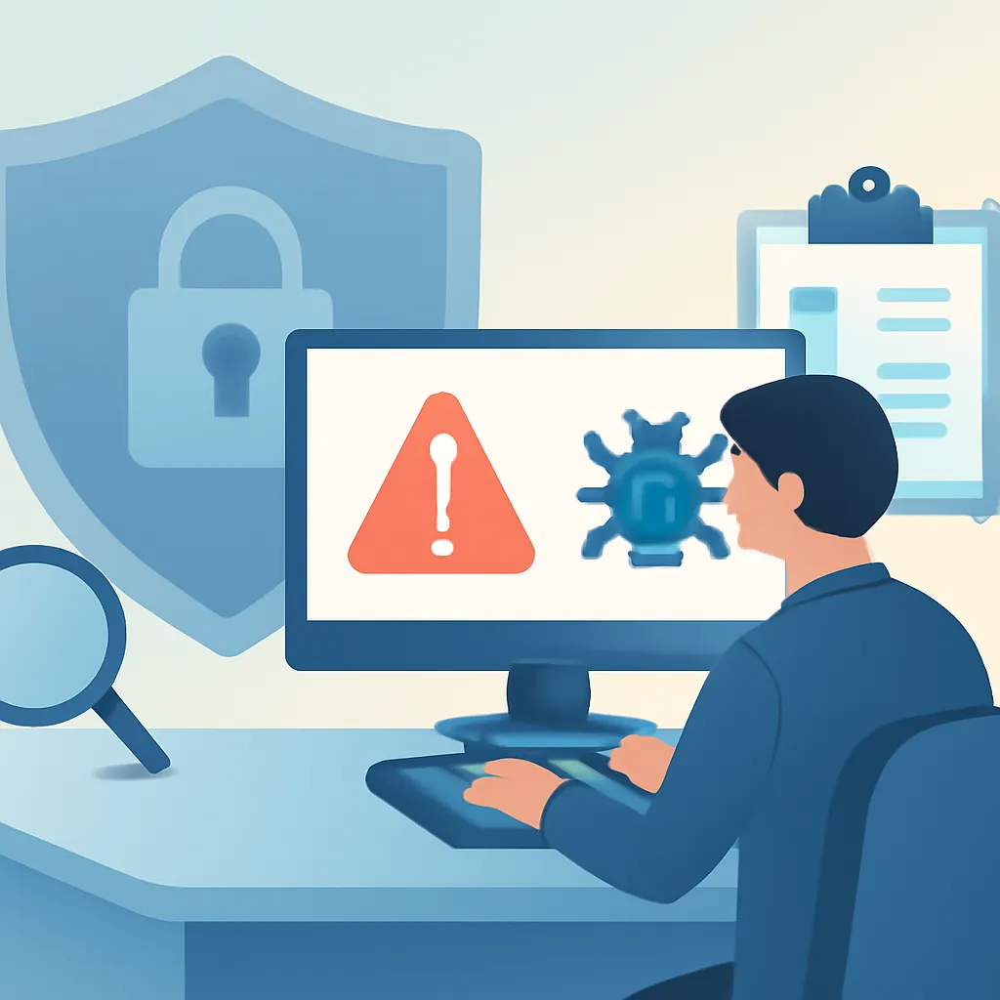

보안 사고 대응 계획(IR) 수립 가이드

자동차 업계에서 일하던 어느 날, 한 고객 데이터베이스가 예상치 못한 공격을 받았다. 취약점은 오래된 소프트웨어 업데이트를 미루던 사이 생겨났다. 빠르게 대응해야 했지만, 순간적인 혼란 속에서 조직의 취약점은 뚜렷이 드러났다. 보안 사고 대응 계획이 없다면, 어느 조직도 이런 상황에서 빠르게 회복할 수 없다.
사건 식별과 초기 대응
보안 사고가 발생하면 가장 먼저 해야 할 일은 사고인지 아닌지를 식별하는 것이다. 예를 들어, 웹 서버의 비정상적 로그 활동을 발견했다고 하자. 이는 단순한 오탐일 수도 있지만, 의도적인 공격일 가능성도 있다. 이런 상황에서 Splunk 같은 로그 분석 도구를 사용하면 비정상 패턴을 신속히 검출할 수 있다. 초기 대응의 핵심은 어떻게든 빠르게 확인하고 조치를 시작하는 것이다. 여기서 중요한 건 툴만 의존하는 게 아니라 모두가 그 의미를 함께 이해하는 거다.
사고 대응 팀 구성과 권한
사고 대응 팀(IRT)의 구성은 미리 정해져 있어야 한다. 팀원들은 각자 맡은 역할과 책임을 명확히 알고 있어야 한다. 우리 조직도 예전엔 해당 분야 전문가들을 모았다가, 실무 경험 없는 인원들이 더 많아 문제를 겪었다. 그래서 이후엔 실무자 중심으로 팀을 재구성했다. 권한에서도 주의할 점이 있는데, 특히 시스템 접근 권한은 정말 필요할 때만 제한적으로 부여하는 것이 중요하다. 과거 한 번은 새로운 직원이 너무 광범위한 권한을 부여받아 데이터를 잘못 삭제했던 사건도 있었다.
대응 프로세스와 의사결정
현장 경험상 응급 상황에서는 의사결정이 느리면 큰 손해로 이어진다. 따라서 대응 프로세스는 명확히 정의되어 있어야 한다. NIST SP 800-61의 지침은 이를 위한 훌륭한 참고자료다. 단계적인 사고 범위 평가, 격리, 복구 절차는 실제 사건 발생 시 혼란을 줄이고 의사결정을 체계적으로 할 수 있게 돕는다. 하지만, 그런 프로세스가 모든 상황에 그대로 적용되진 않는다. 상황에 따라 유연하게 조정해 가는 경험과 노하우도 중요하다.
사고 후 분석과 개선
사고가 끝난 후의 사후 분석은 한 단계 더 나은 대응을 가능하게 한다. Root Cause Analysis (RCA) 기법을 활용해 뿌리부터 원인을 파악하는 게 중요하다. 이전에 내 조직에선 분석을 소홀히 해 같은 유형의 사고가 반복되었던 적이 있다. 더 큰 문제가 되기 전에 학습하고 개선해야 하는데, 여기서 놓치기 쉽다. 특히 교훈을 공유하는 문화도 중요하다. 문제점 파악보다는 개선 방향에 촛점을 두고, 모든 관련자가 참여해 끝까지 책임지는 자세가 필요하다.
현장에서 사고 대응 과정을 구축하며 배우는 점은 세세한 절차보다 이를 어떻게 현실에 맞게 적용하고, 무엇보다 사람들이 그 절차를 신뢰하고 따르는지가 더 중요하다는 것이다. 이렇듯 사람이 중심이 되는 대응 계획은 AI 툴들이 할 수 없는 영역이다. 대응 계획이 아무리 잘 짜여 있어도, 그것을 실행하는 사람들의 신속하고 올바른 판단 덕분에 상황이 진정될 수 있음을 잊지 말자.